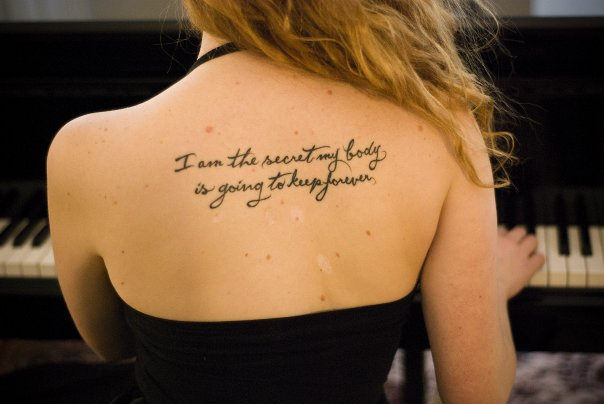
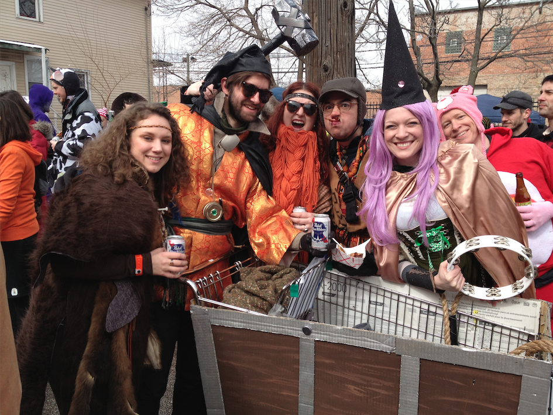
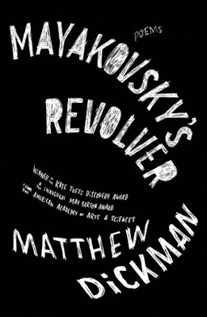
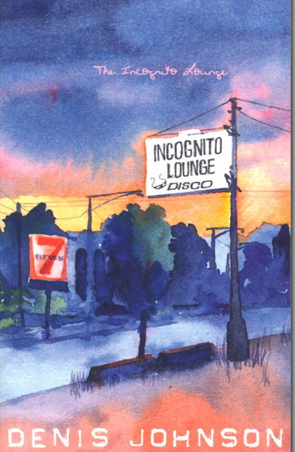
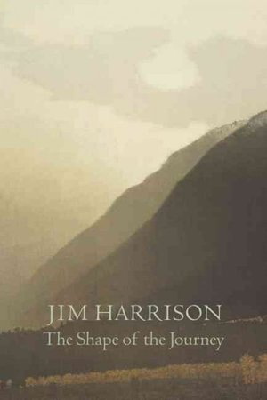
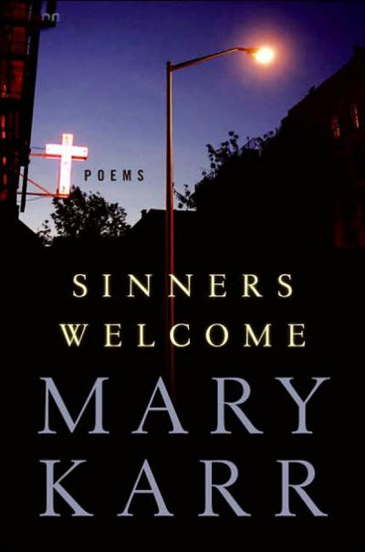

Lauren Scott
Fox
In the far north, there lives a beast with a savage love for code. She stalks the land from the icy woods of Wisconsin to the wind-chapped streets of Chicago, waiting for the day she will descend upon Dev Bootcamp and unleash a fury of apps upon the unsuspecting world.
Poetry, Je T'aime
For the last ten years, I've studied poetry as well as creative nonfiction. I love poets who shy away from "pretty" observations and dull lyricism; I want to feel like I've been punched in the gut when I'm done reading! I have my BA in creative writing and have been published in several literary journals and anthologies. As a reminder to myself to keep writing, and as a sign of my love of my craft, I have three literary tattoos! This one is from Denis Johnson's poem "From a Berkeley Notebook":
Read one of my favorite poems here!
Read one of my own published poems here!
Critical Hit!
Roll for initiative, because my bardic gnome Peanut is about to MESS THINGS UP. I'm an avid player of Dungeons & Dragons and other tabletop RPGs, and I currently play a campaign every week as Peanut, a chaotic good teenage bard who plays the jaw harp and accidentally part demon, despite restlessly fighting for good. Mostly, I like RPGs because I think that collaborative storytelling and problem-solving is an incredible way to exercise your brain--and a good excuse to have a few beers with friends.
All dressed up for a charity race where our team's theme was "Dungeons and Flagons."
Poems Worth Reading
If you're interested in poetry but don't know where to start or who to read next, here's a list of books that are brutal and gorgeous and highly readable.
   
© 2013 Lauren Scott. All Rights Reserved.